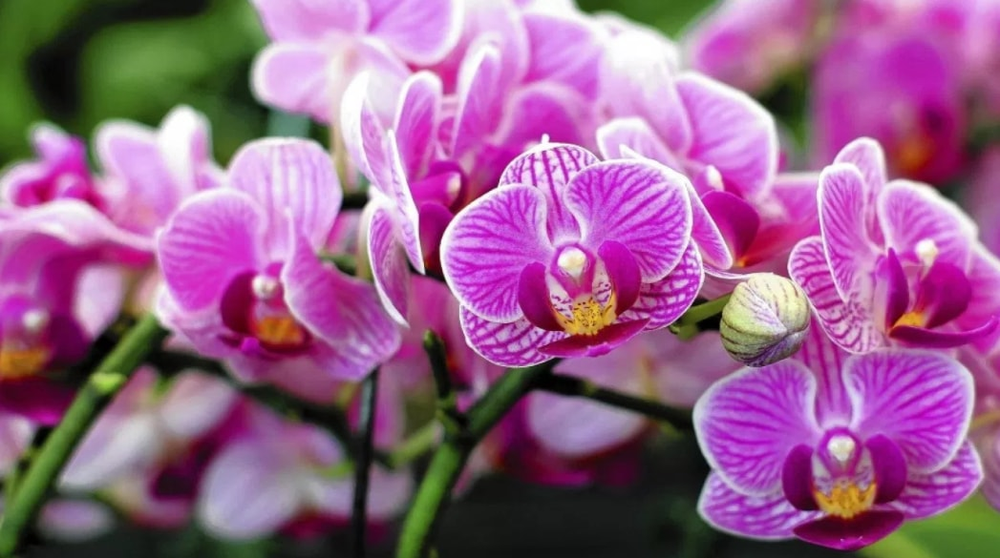
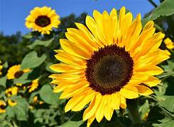
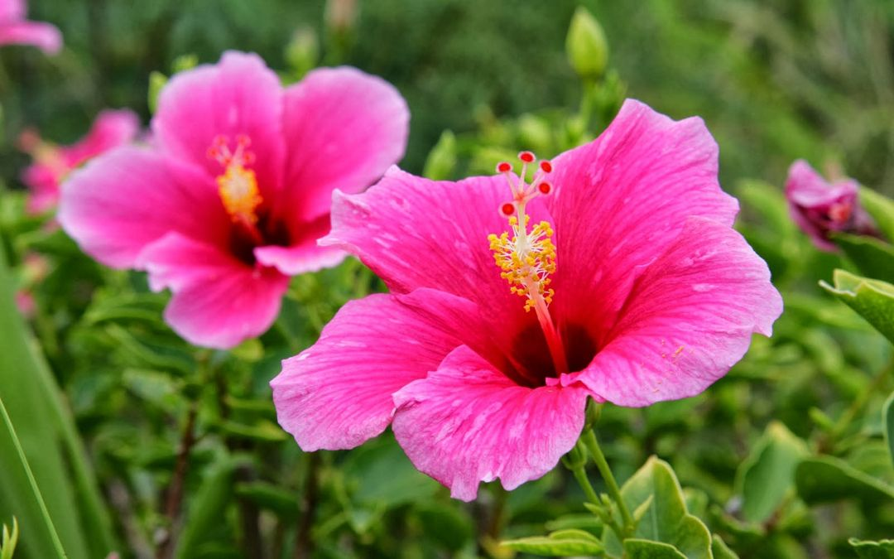
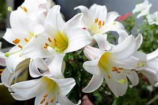

Keajaiban Taman Flora
Di sini, Anda dapat menemukan berbagai jenis flora yang memukau.
Galeri Flora
Mawar

Bunga Mawar adalah simbol cinta yang abadi.
Anggrek
Bunga Anggrek terkenal karena keindahannya yang eksotis.
Tulip
Bunga Tulip adalah nama genus untuk 100 spesies tumbuhan berbunga yang termasuk ke dalam keluarga Liliaceae.
Matahari
Bunga Matahari adalah tumbuhan semusim dari suku kenikir-kenikiran yang populer sebagai tanaman hias atau penghasil minyak.
Sepatu
Bunga Sepatu adalah tanaman perdu yang berbunga terompet dengan variasi warna dan bermanfaat bagi kesehatan.
Lili
Bunga Lily memiliki makna yang berbeda di seluruh dunia yang di percaya bahwa mereka membawa keberuntungan.
Lavender

Bunga Lavender adalah tanaman berbunga ungu yang memiliki banyak manfaat sebagai parfum, ramuan, dan obat.
Kamboja

Bunga Kamboja, juga dikenal sebagai Frangipani, atau bergantian dengan kata Plumeria, adalah tanaman indah yang sering dijumpai di daerah tropis dan subtropis.
Tentang Kami
Taman Flora Virtual adalah proyek yang bertujuan untuk mendokumentasikan dan mempromosikan keindahan flora dari seluruh dunia.
Kontak
Email: info@tamanflora.com